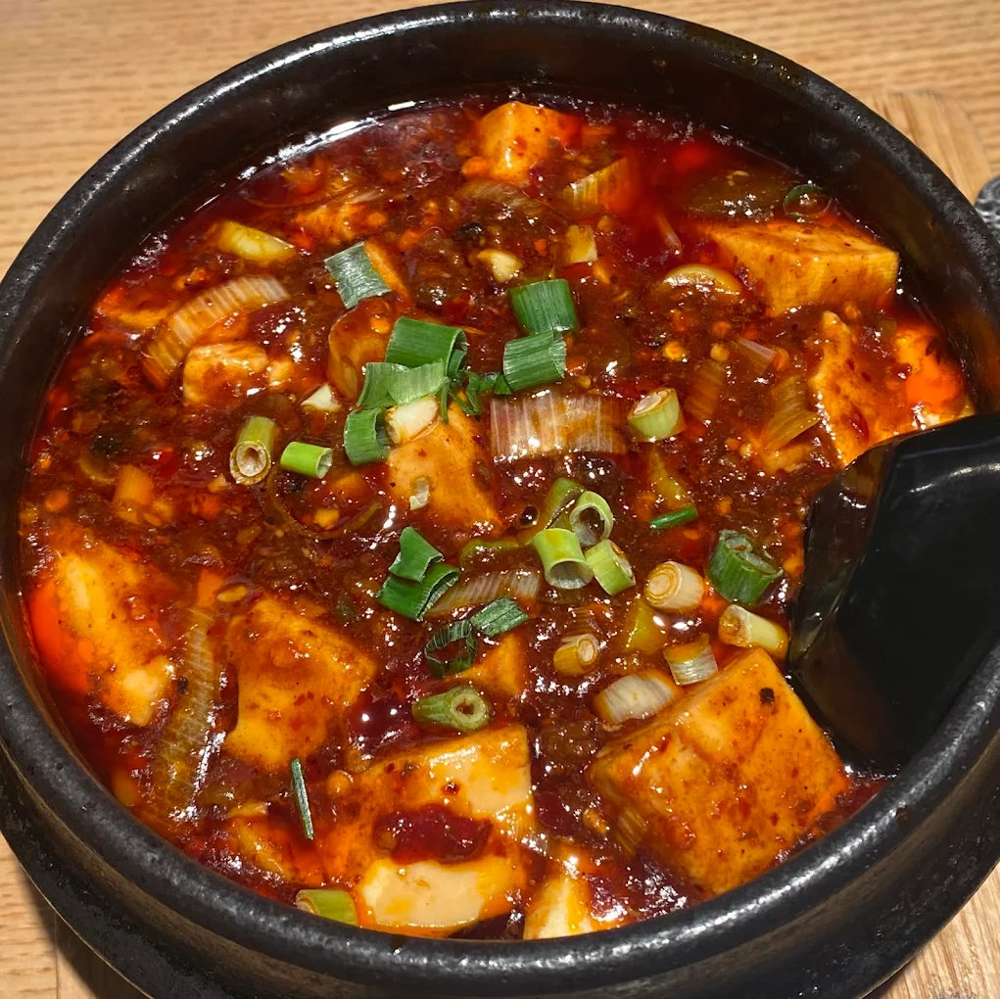

Огненный мир сычуаньской кухни
Сычуаньская кухня — одна из четырёх великих гастрономических школ Китая. Её кредо гласит: «У каждого блюда свой характер, у сотни блюд — сотня оттенков вкуса». Окружённая горами Сычуаньская котловина породила знаменитый вкус «Мала» — симбиоз жгучего перца чили и покалывающего сычуаньского перца.

Легендарные блюда
Ароматное ассорти из тигровых креветок, говядины и хрустящих овощей, обжаренных на раскалённом воке с сычуаньским перцем и восточными пряностями.

Кипящий на огне котёл с густым бульоном на говяжьем жире, наполненным стручками чили и зёрнами сычуаньского перца. Гости сами варят тонкие ломтики мяса прямо за столом.

Нежнейшее отварное куриное филе, отбитое деревянными палочками для мягкости, под бархатным орехово-кунжутным соусом с острым маслом чили и дроблёным арахисом.

Освежающий традиционный десерт из рисовой муки с текстурой нежного пудинга, политый густым тростниковым сиропом. Идеально снимает остроту после пряных блюд.

Целебный десертный суп из белого древесного гриба тремелла, сваренный на медленном огне с леденцовым сахаром и ягодами годжи. Богат коллагеном и полезен для здоровья.

Шесть граней сычуаньской остроты
Сычуаньские кулинары виртуозно управляют оттенками пряностей, выделяя 6 классических типов остроты:
- Мала (Остро-онемевающий): Гармония сычуаньского перца хуадзяо и жгучего перца чили.
- Сянла (Ароматно-пряный): Насыщенный аромат обжаренных в масле специй и чеснока.
- Хула (Копчёный чили): Обжарка стручков чили до лёгкой карамелизации (как в цыплёнке Гунбао).
- Дзаола (Винно-ферментированный): Маринованный с винным осадком перец с пикантной кислинкой.
- Суаньла (Кисло-острый): Идеальный баланс выдержанного уксуса и острого масла.
- Сяньла (Свежий чили): Хрустящий свежий зелёный перец с ярким, бодрящим вкусом.
История сычуаньской кухни
1. Древнее царство Шу и эпоха Тан
Плодородная Сычуаньская равнина издревле славилась богатством урожая. Повара древности активно использовали дикорастущий перец хуадзяо и имбирь, о чём писали великие поэты Ли Бо и Ду Фу.
2. Появление перца чили (XVII век)
Завезённый из Америки красный перец идеально прижился в туманном климате Сычуани, соединившись с местным перцем в непобедимый дуэт «Мала».
3. Климат и гастрономическая мудрость
В условиях влажной сырой зимы и душного лета острая пища стала народным средством для поддержания сил и здоровья, развившись в сложнейшую вкусовую палитру.
Адаптация в Японии
Шеф-повар Чэнь Цзяньминь в 1950-х годах познакомил Японию с сычуаньской кухней, снизив количество перца и масла и добавив сладкую бобовую пасту для мягкого вкуса.